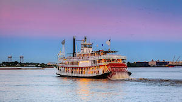

Background
Introduction
New Orleans is a Louisiana city on the Mississippi River, near the Gulf of Mexico. Nicknamed the "Big Easy," it's known for its round-the-clock nightlife, vibrant live-music scene and spicy, singular cuisine reflecting its history as a melting pot of French, African and American cultures. Embodying its festive spirit is Mardi Gras, the late-winter carnival famed for raucous costumed parades and street parties.
History

Situated on a bend of the Mississippi River 100 miles from its mouth, New Orleans has been the chief city of Louisiana and the Gulf of Mexico’s busiest northern port since the early 1700s. Founded by the French, ruled for 40 years by the Spanish and bought by the United States in the 1803 Louisiana Purchase, New Orleans is known for its distinct Creole culture and vibrant history. Significant battles of the War of 1812 and the Civil War were fought over the city. In its last hundred years the key struggles of New Orleans have been social (poverty, racial strife) and natural (hurricanes, floods and slowly sinking land).
Culture
Unquestionably one of the most distinctive cities of the New World, the peoples of New Orleans evolved a unique culture and society, while at the same time blending many heritages such as African American, French and North American. Its citizens of African descent provided a special contribution in making New Orleans the birthplace of jazz. New Orleans is a city of paradox and contrast: while it shares the urban problems afflicting other U.S. cities, it has nevertheless preserved an exuberant and uninhibited spirit, perhaps best exemplified by its Carnival season, which culminates in the famous annual Mardi Gras, when more than a million people throng the streets.
Things to do
Festivals
"Every weekend, every weekday, night and day, there is something to do in New Orleans for anyone and everyone. Music plays a leading role in New Orleans. And while traditional jazz is revered here, New Orleans is tuned into all kinds of music expression. The calendar is dotted with music celebrations. New Orleans shares its passion for food and drink with a series of festivals where anyone can sample, sip or savor the city's best-tasting offerings throughout the year. Art and New Orleans are inspired bedfellows. A city that celebrates dancing to a different drummer, New Orleans salutes the performing, visual and avant-garde art scene..."
Attractions
"From historic homes and streetcar rides to above-ground cemeteries and world-class museums like the National World War II Museum, the opportunities for exploration in New Orleans are truly endless. Whether you're an art aficionado, a history buff, or just looking to experience the city's rich history and culture on a deeper level, you'll find a variety of attractions that are sure to pique your interest."
Night Life
"New Orleans likes to stay up late. The city that is the birthplace of jazz and cocktails and hosts Mardi Gras every year is no sleepy head. While music is the local language any time of the day or night, come sundown in New Orleans, opportunities to listen and dance to live music and catch cabaret shows are in every nook and cranny. The city comes alive at night, keeping a syncopated beat that is irresistible and is still going strong when the sun comes up."